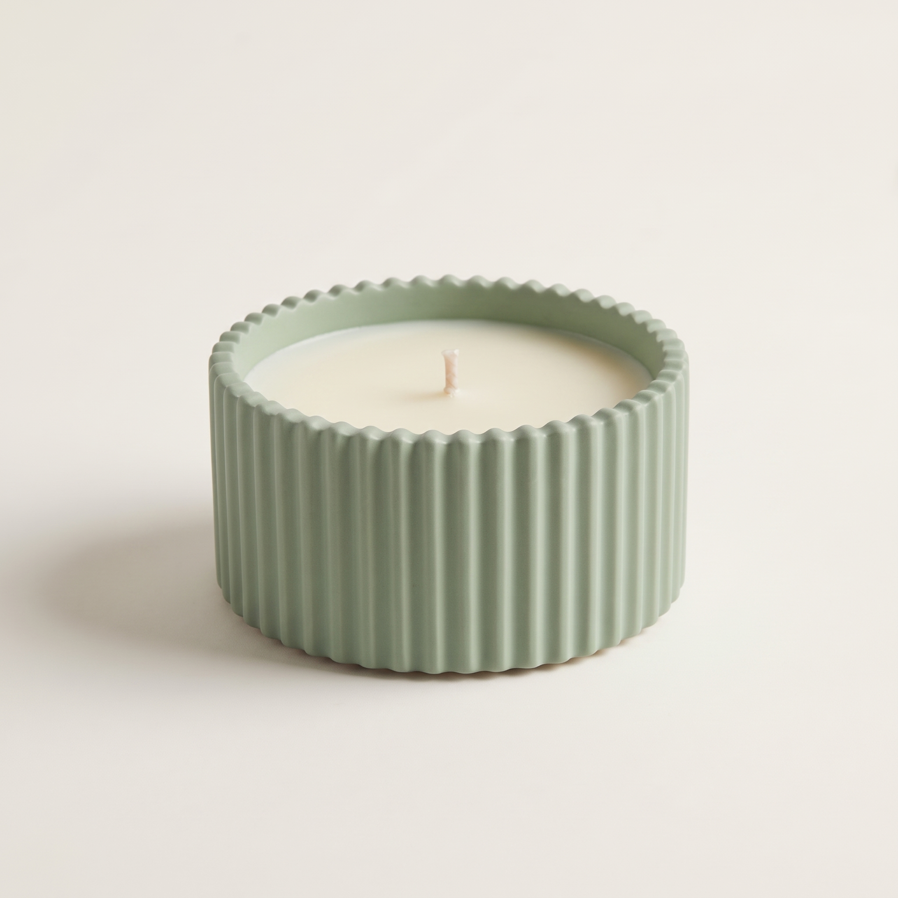

Silk & Ember · The Mini Collection
Secret Garden (Mini Glass)
The Vibe Clean, ethereal floral luxury with crisp pear and cashmere peonies.
Spatial Prescription
Personal Sanctuary & Bath
Eco-friendly rapeseed wax blend
KSh 800
Tax included
In Stock — Ships this week
Crisp pear, white thyme, and cashmere peonies elevate personal self-care rituals in our compact mini glass vessel.
TOP: Cashmere, Peonies
HEART: Pear, Crisp Thyme
BASE: Garden Elixir, White Musk
Details
Hand-poured in Nairobi with clean-burning rapeseed wax and lead-free cotton wicks. Compact 80g glass vessel ideal for scent discovery, intimate workspaces, and thoughtful gifting.
Fragrance Notes
Top: Cashmere, Peonies
Heart: Pear, Crisp Thyme
Base: Garden Elixir, White Musk
Shipping
Mini Glass vessels ship within 3–5 business days across Nairobi and wider Kenya.